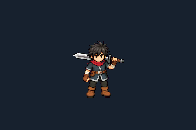
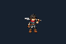

Unbroken Vow — brace, release, protect
Same King, same size. A short planted activation returns to his existing idle and walk while the accepted blue barrier continues flowing.
APPROVED IDLE · 4× GAMEPLAY SIZE
ACTIVATION STUDY · SAME DISPLAY SCALE
NATIVE GAMEPLAY SIZE
Cast: 0.32 seconds. Eight pose slots with exact original idle bookends.
This is an art and timing study, not a gameplay capture. Walking is shown in place to compare the transition. The final disappearance resets the review; the production shield-expiry animation remains to build.
Normal-speed GIF · Slow GIF · All poses · Scope and measurements